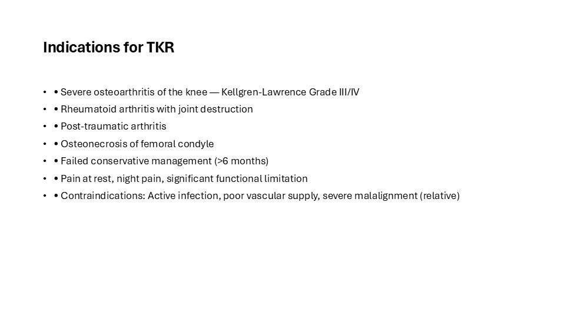
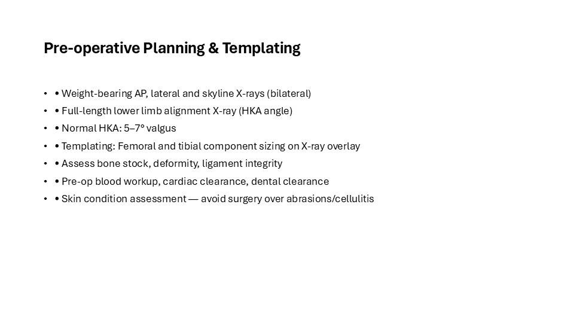
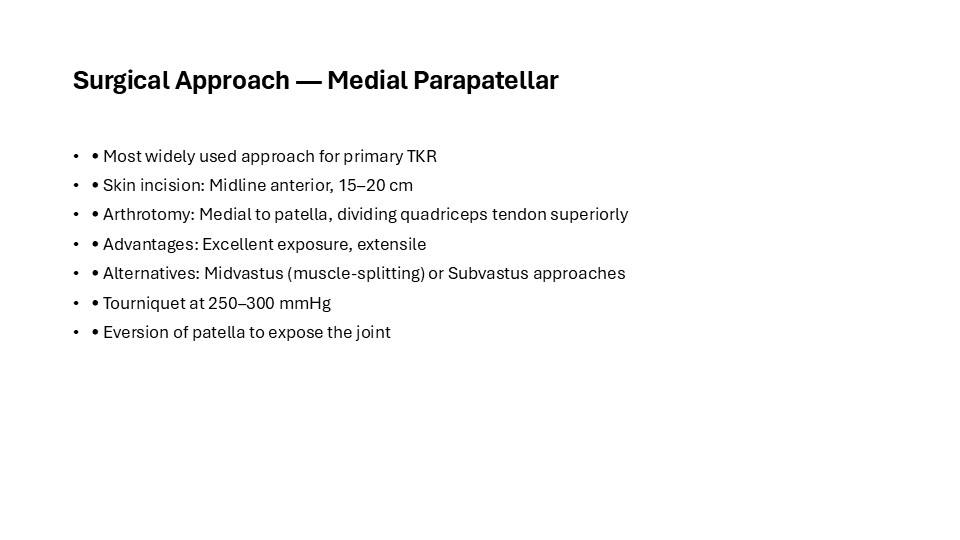
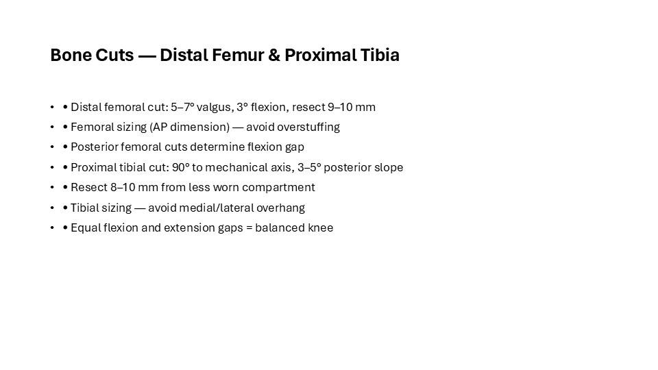
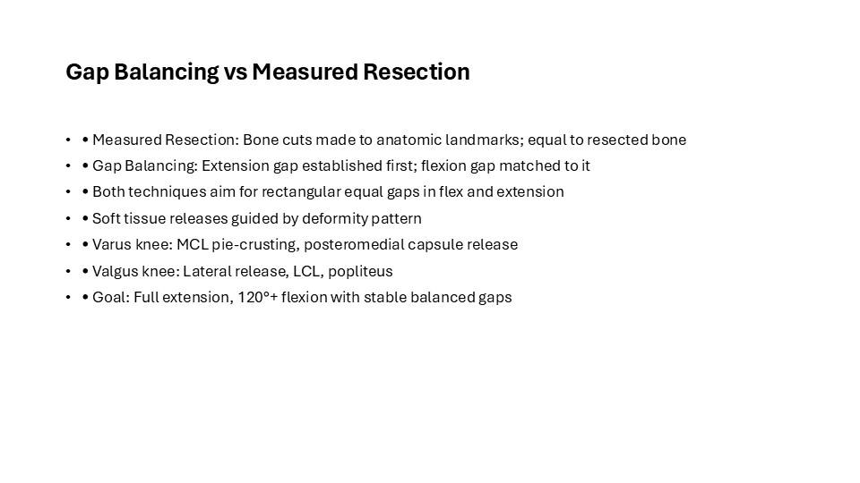
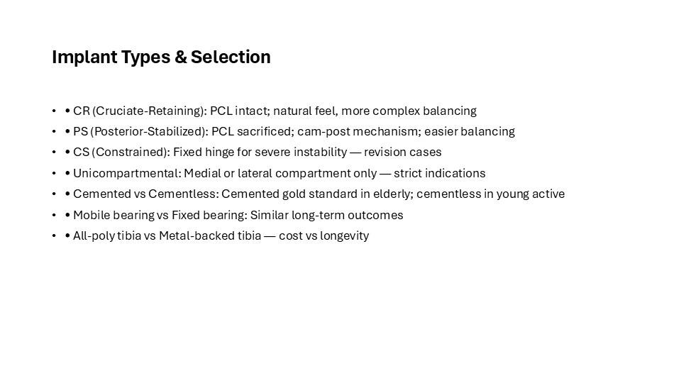
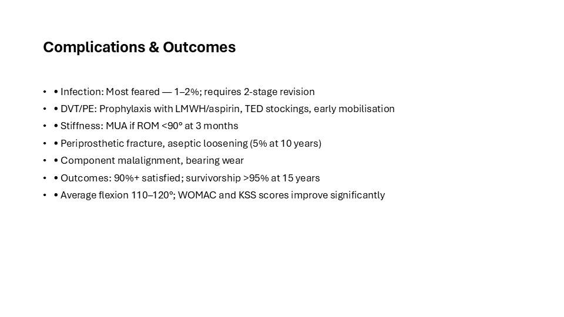
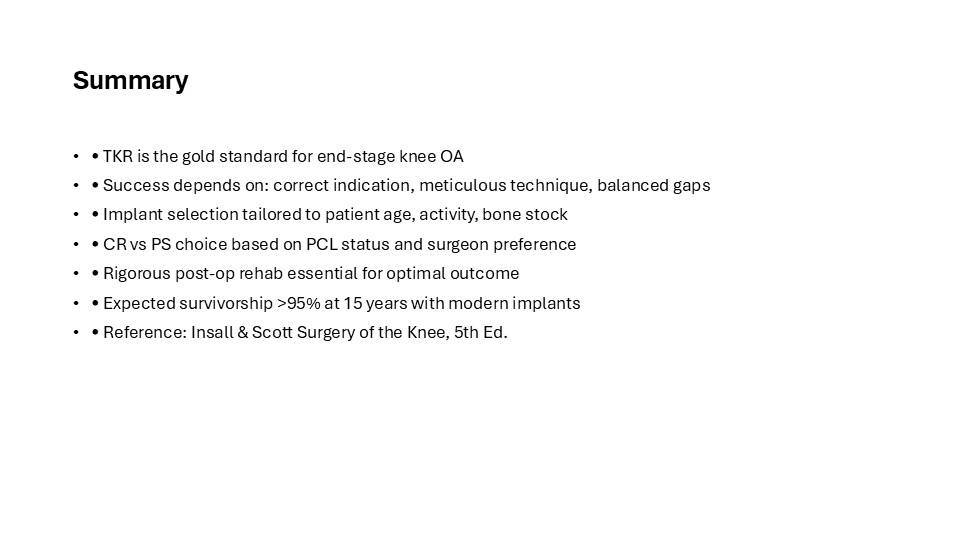

This is the full illustrated version of a teaching presentation prepared by Dr. Maninder Singh (GMCH Amritsar). Every slide is shown below with its text, so you can read it like an article — or download the original PowerPoint (.pptx) to teach from it. Topics covered include: Pre-operative Planning & Templating; Surgical Approach — Medial Parapatellar; Bone Cuts — Distal Femur & Proximal Tibia; Gap Balancing vs Measured Resection; Implant Types & Selection; Complications & Outcomes; Summary.
Contents — jump to a slide (8)

Indications for TKR
- • Severe osteoarthritis of the knee — Kellgren-Lawrence Grade III/IV
- • Rheumatoid arthritis with joint destruction
- • Post-traumatic arthritis
- • Osteonecrosis of femoral condyle
- • Failed conservative management (>6 months)
- • Pain at rest, night pain, significant functional limitation
- • Contraindications: Active infection, poor vascular supply, severe malalignment (relative)

Pre-operative Planning & Templating
- • Weight-bearing AP, lateral and skyline X-rays (bilateral)
- • Full-length lower limb alignment X-ray (HKA angle)
- • Normal HKA: 5–7° valgus
- • Templating: Femoral and tibial component sizing on X-ray overlay
- • Assess bone stock, deformity, ligament integrity
- • Pre-op blood workup, cardiac clearance, dental clearance
- • Skin condition assessment — avoid surgery over abrasions/cellulitis

Surgical Approach — Medial Parapatellar
- • Most widely used approach for primary TKR
- • Skin incision: Midline anterior, 15–20 cm
- • Arthrotomy: Medial to patella, dividing quadriceps tendon superiorly
- • Advantages: Excellent exposure, extensile
- • Alternatives: Midvastus (muscle-splitting) or Subvastus approaches
- • Tourniquet at 250–300 mmHg
- • Eversion of patella to expose the joint

Bone Cuts — Distal Femur & Proximal Tibia
- • Distal femoral cut: 5–7° valgus, 3° flexion, resect 9–10 mm
- • Femoral sizing (AP dimension) — avoid overstuffing
- • Posterior femoral cuts determine flexion gap
- • Proximal tibial cut: 90° to mechanical axis, 3–5° posterior slope
- • Resect 8–10 mm from less worn compartment
- • Tibial sizing — avoid medial/lateral overhang
- • Equal flexion and extension gaps = balanced knee

Gap Balancing vs Measured Resection
- • Measured Resection: Bone cuts made to anatomic landmarks; equal to resected bone
- • Gap Balancing: Extension gap established first; flexion gap matched to it
- • Both techniques aim for rectangular equal gaps in flex and extension
- • Soft tissue releases guided by deformity pattern
- • Varus knee: MCL pie-crusting, posteromedial capsule release
- • Valgus knee: Lateral release, LCL, popliteus
- • Goal: Full extension, 120°+ flexion with stable balanced gaps

Implant Types & Selection
- • CR (Cruciate-Retaining): PCL intact; natural feel, more complex balancing
- • PS (Posterior-Stabilized): PCL sacrificed; cam-post mechanism; easier balancing
- • CS (Constrained): Fixed hinge for severe instability — revision cases
- • Unicompartmental: Medial or lateral compartment only — strict indications
- • Cemented vs Cementless: Cemented gold standard in elderly; cementless in young active
- • Mobile bearing vs Fixed bearing: Similar long-term outcomes
- • All-poly tibia vs Metal-backed tibia — cost vs longevity

Complications & Outcomes
- • Infection: Most feared — 1–2%; requires 2-stage revision
- • DVT/PE: Prophylaxis with LMWH/aspirin, TED stockings, early mobilisation
- • Stiffness: MUA if ROM <90° at 3 months
- • Periprosthetic fracture, aseptic loosening (5% at 10 years)
- • Component malalignment, bearing wear
- • Outcomes: 90%+ satisfied; survivorship >95% at 15 years
- • Average flexion 110–120°; WOMAC and KSS scores improve significantly

Summary
- • TKR is the gold standard for end-stage knee OA
- • Success depends on: correct indication, meticulous technique, balanced gaps
- • Implant selection tailored to patient age, activity, bone stock
- • CR vs PS choice based on PCL status and surgeon preference
- • Rigorous post-op rehab essential for optimal outcome
- • Expected survivorship >95% at 15 years with modern implants
- • Reference: Insall & Scott Surgery of the Knee, 5th Ed.
Use this deck in your teaching
The original editable PowerPoint is free to download for non-commercial teaching, with credit to the author. Questions or corrections? Contact us.
About this deck
Prepared by Dr. Maninder Singh (MS Orthopaedics, Associate Professor, GMCH Amritsar) for postgraduate and clinical teaching. Where images are from open-licence sources (for example Wikimedia Commons), the licence and author appear on the slide. See our editorial policy. Educational use only — not medical advice; see Terms & Medical Disclaimer.